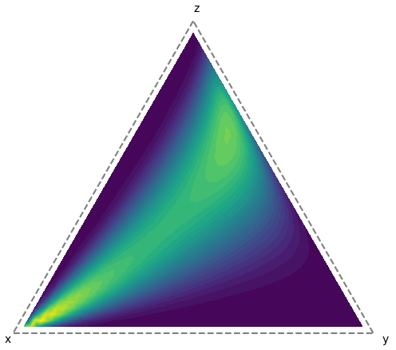

Hector Blondel
Ending a Master of Engineering (electrical engineering, telecommunications) at CentraleSupélec, Paris Saclay
My main interest topics lie between signal processing, statistics and their application to telecommunications.
Experience
- LabSTICC, IMT Atlantique - Research Intern / Master thesis (May - October 2025)
Designing transformations for spatialized prior distributions on the simplex in a bayesian context : application to spectral unmixing
Topics : Optimization, Differential geometry, Sampling (MCMC)
- Apple Munich - System Engineering Intern (2024)
Topics : Beamforming, CFO estimation
- Fraunhofer HHI - Research Intern (August - December 2023)
Waveform design and equalization for 6G Sub-THz communication
- Junior Centrale-Supélec - Consultant (March - August 2023)
Data - creation of a database on recycling and reuse in the building sector
Documents / Works
-
Master thesis report
Designing transformations for spatialized prior distributions on the simplex in a Bayesian context: application to spectral unmixing.
-
Discrete Fourier Transform and Circulant Matrices
Useful for students or curious people interested in signal processing and knowing a little bit of linear algebra. document available
Academic Projects
- Super-Resolved LASSO for Radio Source Detection
- Optimization of Compilation Parameters for Wave Propagation
- Decoding RDS Signals with SDR